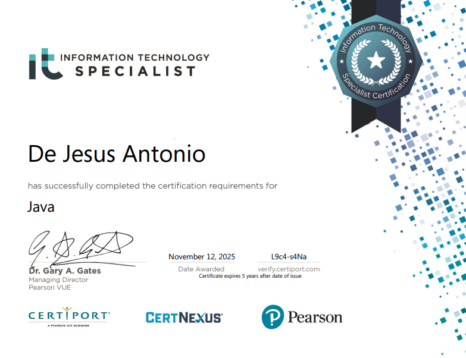

About Me
Hello! I'm Antonio De Jesus, a 2nd year Computer Science student who enjoys travelling, exploring new things, and continuously trying to learn new skills. I am passionate when it comes to technology and programming, and I wish to build meaningful and efficient systems in the near future, and I'm always eager to learn more.
Achievements/Certifications
IT Specialist Certificate in Java
Previous Projects
- TrackWise: A Personal Budget Tracking and Expense Management System
- Parsing Postcards: A CFG-Based Tokenizer
- Simple Ping-Pong Game
- M1 FA2 | FreshSense
Social Links